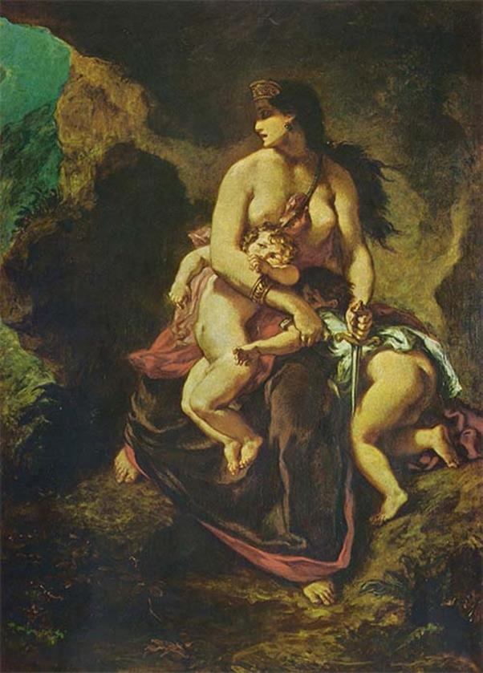

Cái Chết Của Jason
Jason và Médée sang trú ngụ ở đất Corinthe dưới quyền trị vì của vua Créon. Cuộc sống của họ trôi đi trong hạnh phúc bình thường, giản dị. Médée sinh được hai con trai. Cuộc đời của họ tưởng cứ thế kéo dài cho đến khi mãn chiều xế bóng. Nhưng có ai ngờ được lòng người thay đổi khôn lường. Sông sâu còn có kẻ dò chứ lòng người thì...
Vua Créon có một người con gái xinh đẹp tên là Glaucé. Sắc đẹp và địa vị của nàng, nhất là địa vị của nàng, đã khiến cho Jason tơ tưởng, và rồi, Jason đem lòng yêu mến Glaucé, bày tỏ tình cảm tha thiết của mình đối với nàng cũng như quyết tâm gắn bó cuộc đời của mình đối với nàng. Vua Créon biết chuyện nhưng chẳng can ngăn. Ông bằng lòng gả con gái cho Jason. Thế là Jason phụ bạc Médée, quên hết mối tình đẹp đẽ thiêng liêng đã gắn bó mình với Médée trong sự nghiệp đi chinh phục Bộ lông Cừu vàng.
Biết chuyện, Médée vô cùng đau khổ. Nàng cảm thấy bị xúc phạm trắng trợn, bị phản bội. Nàng đã hy sinh hết thảy vì Jason và sự nghiệp của chàng: phản lại vua cha, giết người anh ruột, rời bỏ quê hương đến đất nước Hy Lạp. Nàng chẳng mong muốn gì hơn ngoài việc được sống trong tình yêu chung thủy và hạnh phúc đầm ấm thuận hòa. Thế mà giờ đây điều đó không còn. Médée buồn rầu, đau khổ, giận dữ. Có những lúc nàng như điên như dại, khi thì khóc nấc lên, gào thét, vật vã, khi thì nguyền rủa bản thân mình, nguyền rủa hai đứa con, đe dọa sẽ phá hết, giết hết. Từ nỗi đau khổ, uất ức, ghen giận đó một ý định trả thù bỗng lóe lên trong trái tim nàng và ngày càng hun đốt nó, Médée cầu khấn nữ thần Thémis, người cai quản công lý, cầu khấn thần Zeus tối uy tối linh và nữ thần Hécate, người mà nàng thờ phụng chứng giám cho nàng. Nàng quyết biến cuộc hôn nhân đã làm nàng đau khổ thành một đám tang, biến ba kẻ thù của nàng: người cha, đứa con gái và chàng con rể thành ba cái xác chết.
Những cơn giận dữ điên dại và những lời nguyền rủa của nàng đã bay đến tai Jason và vua Créon. Jason bèn vội tới gặp Médée để an ủi khuyên giải nàng, nhưng lời khuyên giải, an ủi của một kẻ ham tiền tài, địa vị, chà đạp lên tình nghĩa thì phỏng có ích gì! Trước những lời kết tội, sỉ mắng của Médée, Jason lại càng tỏ ra hèn kém và xấu xa. Y kể với Médée là đã có công đưa nàng từ một đất nước Dã man về nước Hy Lạp văn minh và thần thánh. Vì lẽ đó nàng nên biết ơn y và không nên tức giận phản đối cuộc hôn nhân của y với Glaucé. Y nói sở dĩ y phải bỏ nàng để kết hôn với công chúa không phải vì y muốn có nhiều con hoặc đam mê sắc đẹp của Glaucé. Y kết hôn với công chúa chỉ vì tương lai của các con. Nhờ cuộc kết hôn này mà đời chúng sẽ có địa vị, có danh tiếng và giàu có.
Nhưng vua Créon thì không đối xử với Médée như Jason. Nhà vua biết Médée là người thờ phụng nữ thần Hécate, rất giỏi pháp thuật và đã từng dùng pháp thuật giết chết Pélias. Vì thế nhà vua ra lệnh: đuổi thẳng Médée và hai đứa con của nàng đi khỏi xứ Corinthe, đi ngay không được chậm trễ. Có như thế mới bảo đảm cho lễ thành hôn của Glaucé được yên lành. Tình cảnh Médée đến lúc này lại càng thêm khổ nhục, bế tắc. Nàng van xin vua Créon cho nàng trú ngụ ở Corinthe nhưng không được. Cuối cùng, nàng chỉ được Créon chấp thuận cho nán lại một ngày để thu xếp. Thực ra Médée xin nán lại một ngày là để thu xếp việc trả thù. Ý định trả thù trong trái tim nàng đã rõ rệt, rắn chắc không gì có thể lay chuyển nổi: Nàng quyết không để cho những kẻ làm nhục nàng, chà đạp lên số phận của nàng được đắc chí, hớn hở, vui mừng vì những việc làm bất nhân bất nghĩa của chúng.
Vào lúc đó, Égée, một vị vua trị vì ở đô thành Athènes, đang ở trên đất Corinthe. Égée đến Corinthe để cầu khấn thần Apollon, xin thần ban cho một lời chỉ dẫn để chấm dứt cảnh hiếm hoi. Nhà vua đi cầu tự. Được tin, Médée bèn xin Égée cho trú ngụ. Nhà vua nghe Médée thuật lại tình cảnh bất hạnh của nàng trong lòng vô cùng xúc động, đã chấp nhận lời cầu xin của Médée. Tuy nhiên nhà vua ngỏ ý là Médée sẽ tự đi đến Athènes, còn tại đây ở ngay trên đất Corinthe này, nhà vua không thể đón tiếp Médée được. Làm như vậy sẽ gây ra mối bất bình đối với Créon. Dù sao Médée cũng đã được nhà vua đô thành Athènes thề hứa sẽ bảo vệ nàng, không bao giờ, dù có gặp sức ép của vua Créon, trao nộp nàng cho Créon. Còn Médée, nàng hứa sẽ dùng pháp thuật của mình chữa cho Égée thoát cảnh hiếm hoi, và chính vì lời hứa này mà vua Égée đã sẵn sàng giúp đỡ người đàn bà bất hạnh đó.
Mọi việc đã thu xếp xong xuôi. Bây giờ đến lúc Médée thực hiện ý đồ trả thù của mình. Trước hết, Médée cho mời Jason đến để xin cho hai đứa con trai được ở lại Corinthe. Nàng tỏ vẻ hối hận vì vừa rồi trong lúc giận dữ đã quá lời, xúc phạm đến Jason. Nàng xin lỗi Jason và nghĩ lại, nàng nhận thấy việc Jason kết hôn với công chúa Glaucé là khôn ngoan, sáng suốt. Nàng sẽ sai hai đứa con đem những lễ vật quý báu đến để dâng tặng công chúa Glaucé, nhờ Jason xin với công chúa cho hai con trai nàng được ở lại Corinthe. Jason ưng thuận. Médée bèn trao cho hai đứa con đem một tấm khăn choàng (có chuyện kể là một chiếc áo) và một chiếc vương miện bằng vàng đến cung điện dâng công chúa. Nhận được tặng phẩm quý báu, công chúa bèn choàng tấm khăn lên người và đội chiếc vương miện bằng vàng rực rỡ lên đầu. Đòn trả thù nghiệt ngã, khủng khiếp thế là được thực hiện. Công chúa vừa khoác tấm khăn lên người và đội vương miện lên đầu chưa kịp ngắm nghía dung nhan của mình trong gương thì bỗng rùng mình, khó chịu. Mặt nàng biến sắc, người loạng choạng, lảo đảo và run bắn lên. Nàng phải lui lại gieo mình xuống ghế để khỏi ngã xuống đất. Thế rồi mắt nàng đảo ngược lên, bọt mép sùi ra, máu trong người tuôn chảy.
Gia nhân thấy vậy hốt hoảng chạy đi trình báo vua cha. Chưa hết, chiếc vương miện trên đầu công chúa bỗng nhiên bốc cháy. Lửa bùng lên ngùn ngụt thiêu đốt tóc nàng và lan xuống khắp người nàng. Nàng vùng đứng dậy chạy như điên như dại quanh phòng gào thét. Nàng cố dứt tấm khăn choàng ra nhưng không được. Nó đã bám chặt vào da thịt nàng cắn xé. Nàng cố tháo chiếc vương miện ra khỏi đầu cũng không được. Glaucé ngã vật xuống đất người bốc cháy đùng đùng như một ngọn đuốc. Vua Créon được tin, chạy vội về. Ông ôm chầm lấy con gái khóc than. Nhưng đến khi vua đứng dậy thì không được. Chiếc khăn choàng ma quái đã níu chặt vua lại và lóc da rứt thịt nhà vua ra, và hai cha con đã chết bên nhau.
Còn Médée, khi hai đứa con dâng lễ vật cho công chúa xong trở về, nàng liền bắt chúng vào phòng, lấy gươm đâm vào cổ chúng, giết chúng như nàng nói, cho hết cái nòi giống Jason phản bội. Vả lại, nàng nghĩ, nếu không giết chúng thì nhân dân Corinthe cũng sẽ giết chúng vì mẹ chúng phạm tội giết nhà vua và công chúa. Jason được tin chạy vội tới với hy vọng có thể cứu được những đứa con thoát khỏi sự trừng phạt của nhân dân Corinthe, nhưng đã quá muộn: Một cỗ xe do những con rồng có cánh kéo từ trời cao hạ xuống đón Médée đưa nàng sang đô thành Athènes. Nàng đem theo cả thi hài hai đứa con và mặc cho Jason van xin, nàng không cho Jason được quyền chôn cất chúng. Nàng kết tội, chính Jason là kẻ gây ra cái chết của hai đứa con.

Médée giết con
Jason vô cùng đau đớn trước những thảm họa liên tiếp giáng xuống đời mình. Y như điên như dại. Y bỏ đi lang thang hết nơi này đến nơi khác. Đòn trả thù của Médée thật hiểm độc: Jason không chết nhưng phải sống cô đơn không người thân thích và sống với nỗi hối hận vò xé, cắn rứt trong trái tim. Suốt đời Jason cứ đi lang thang hết nơi này đến nơi khác. Biến cố khủng khiếp vừa qua như một vết dao khắc sâu vào trái tim y, khiến y cố quên đi mà không sao quên được. Bữa kia đi lang thang trên bãi biển, bất ngờ y gặp lại con thuyền Argo nằm úp mình trên bãi cát. Nơi đây thuộc địa phận của đô thành Istros. Con thuyền Argo sau khi hoàn thành sứ mạng vẻ vang của mình, được các vị anh hùng làm lễ hiến dâng cho vị thần Poséidon. Nhìn thấy con thuyền, bùi ngùi nhớ lại những kỷ niệm xưa, Jason càng chán nản, mỏi mệt. Chẳng ai có thể nghĩ được, hiểu được vì sao từ người anh hùng danh tiếng như thế mà đổi thay đến nỗi trở thành một kẻ tham tiền tài, địa vị, phản bội, phụ bạc lại người vợ đã hy sinh tận tụy cho sự nghiệp của mình, và để rồi giờ đây là một kẻ sống lang thang, bị khinh bỉ, ghê tởm! Than ôi, thật là “Mua danh ba vạn, bán danh ba đồng!”
Trời đang nắng gắt. Jason bèn chui vào nằm dưới gầm con thuyền để nghỉ. Y ngủ thiếp đi, và chính trong giấc ngủ này, một giấc ngủ say và mệt của một kẻ sống không còn niềm vui và hy vọng, không còn niềm tự hào về quá khứ vinh quang và danh dự cao cả, không còn cả nỗi lo âu vì đại nghĩa, vì số phận của lương dân, vì truyền thống đẹp đẽ, của tổ tiên, chính trong giấc ngủ này y đã chết. Con thuyền Argo trải qua năm tháng dãi dầu cũng đến lúc suy sụp. Một tấm ván của con thuyền bung ra và rơi xuống trúng đầu Jason kéo theo một vài thanh giầm sập xuống. Jason đã chết như thế, một cái chết không ai biết đến, không có lễ tang, không một giọt nước mắt xót thương của những người thân thích. Con thuyền Argo mục nát đã chôn vùi y, kết thúc cuộc sống của một kẻ đã chết về chí khí và đạo đức của người anh hùng từ lâu. Buồn thay những thăng trầm của cuộc đời nhưng tất cả đều do Số mệnh và các vị thần Olympe vạch đường chỉ lối.
Bảng gia hệ của Pélias và Jason